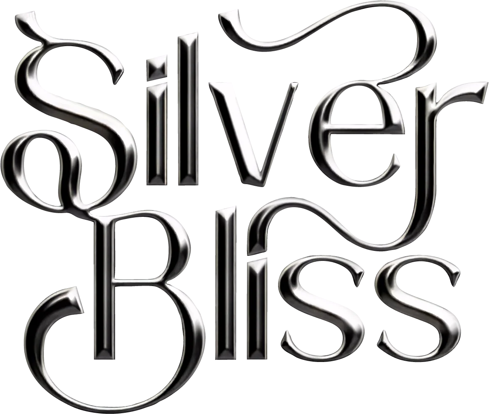

Hi, I’m Kris.
I design apps, dashboards, posters and brands.
Apps & UI · shop app
blend
A sustainable clothing shop built on a capsule wardrobe: every top goes with every bottom. In the change room you mix the pieces before you buy them.
Capsule
Every piece goes with every other, so fewer pieces make more outfits.
Why?
blend had to be a sustainable shop, and it needed something its competitors don’t have.
That something is a capsule wardrobe. Every piece in an event is chosen to go with every other piece, so fewer pieces make more outfits. With 3 tops and 2 bottoms you already have 6 outfits, and you try them all in the change room.
Apps & UI · data dashboard
TravelPulse
A dashboard that turns TikTok and Instagram posts into demand forecasts for hotels, travel agencies and airlines: where travellers are going next, and why.
Early signal
TikTok and Instagram travel posts, read as a sign of demand.
Why?
A marketing director at a boutique hotel chain sees a destination blow up on TikTok too late to change prices or packages. They still rely on 6-month-old surveys.
So TravelPulse reads travel posts on TikTok and Instagram as an early demand signal. A world map shows where the conversation is and how it feels. A destination page shows the what (hashtags) and the why (sentiment), and one click turns it into a marketing brief.
Apps & UI · Figma plugin
Interaction Stamp
A Figma plugin for prototypes with variables: build an interaction once, then stamp it onto other layers. Card 1's “added 1” becomes “added 2” and “added 3” on the next cards.
Build once
Stamp one card’s interaction on the others, and the numbers count up.
Why?
A shop prototype has a card per product, and every card needs the same “add to cart” interaction, but each with its own variable: “added 1”, “added 2”, “added 3”. In Figma, that means building it again on each card and re-picking every variable in every action.
Now you build the interaction once. Save it from one card, select the others and stamp it on. The numbers count up in reading order, left to right and then down, so Card 2 gets “added 2” and Card 3 gets “added 3”.
Graphic design · branding
Silver Bliss
A metallic logo, made into live chrome. Move the mouse over it and the light slides across the silver.
Live chrome
The shine moves across the 2D logo, bevelled by a normal map.
Why?
A metallic logo shown as a flat picture is only a photo of metal: the shine never moves.
The logo is real chrome on the page, an idea from a reel by @archieauburn where 3D letters reflect the webcam. This version is built differently: the logo stays 2D and a normal map gives it its bevel. That works straight from the logo picture, so the lettering stays exactly as designed, and it’s far lighter than a 3D scene, so it runs smoothly on any phone.

Graphic design · posters
Posters
Posters for causes, anniversaries, films and books. Click one to see it large.
2+1=1
A proverb as a sum: you become like the company you keep.
More
“С каквото се събереш… такъв ставаш”: you become like the company you keep. The proverb written as a sum on a school board, where two and one make one.
Graphic design · motion
Animated posters
Two posters made to move: animated in Figma, rebuilt to play right on the page. Click one to see it large.
The wolf
Turning black and shrinking, he walks into the dark instead of sinking.
More
“Вълкът и 7-те козлета” (The Wolf and the Seven Young Goats). The title drops in front of the wolf, the fish swim apart, and the wolf turns black and shrinks towards his feet, so he walks off into the dark instead of sinking. Built from the poster’s own layers moved on the page, so the type stays sharp and it plays on phones.
Graphic design · logos
Logos
Marks with an idea inside: a goat in a K, a radiator that spells “warm”, a swan that’s also a hand.
Koza
The K grows a goat’s horn and head: Коза means goat.
More
Коза is Bulgarian for goat, so the K grows one: the arm of the letter is a curved horn, and a goat’s head comes out of the stem.
Graphic design · editorial
Magazine and covers
A magazine spread and a CD cover, in mock-ups.
Magazine spread
Two album reviews on one spread: serif headlines, and text in columns around the photos.
Graphic design · photo retouching
Retouch
Product photos for an online fashion shop, shown on request.
Point at a photo, or hold it, to see the original.
Coat
Colour corrected to a warmer beige.
About
Christian Marchew
I’m a UI/UX and graphic designer in Sofia. I trained in fine arts at the National Academy of Arts, first in poster and visual communication, then in illustration, before taking Telerik Academy’s UX/UI program in 2024. Today I work as a graphic designer and project manager: retouching fashion photography, building Photoshop actions, working directly with clients.